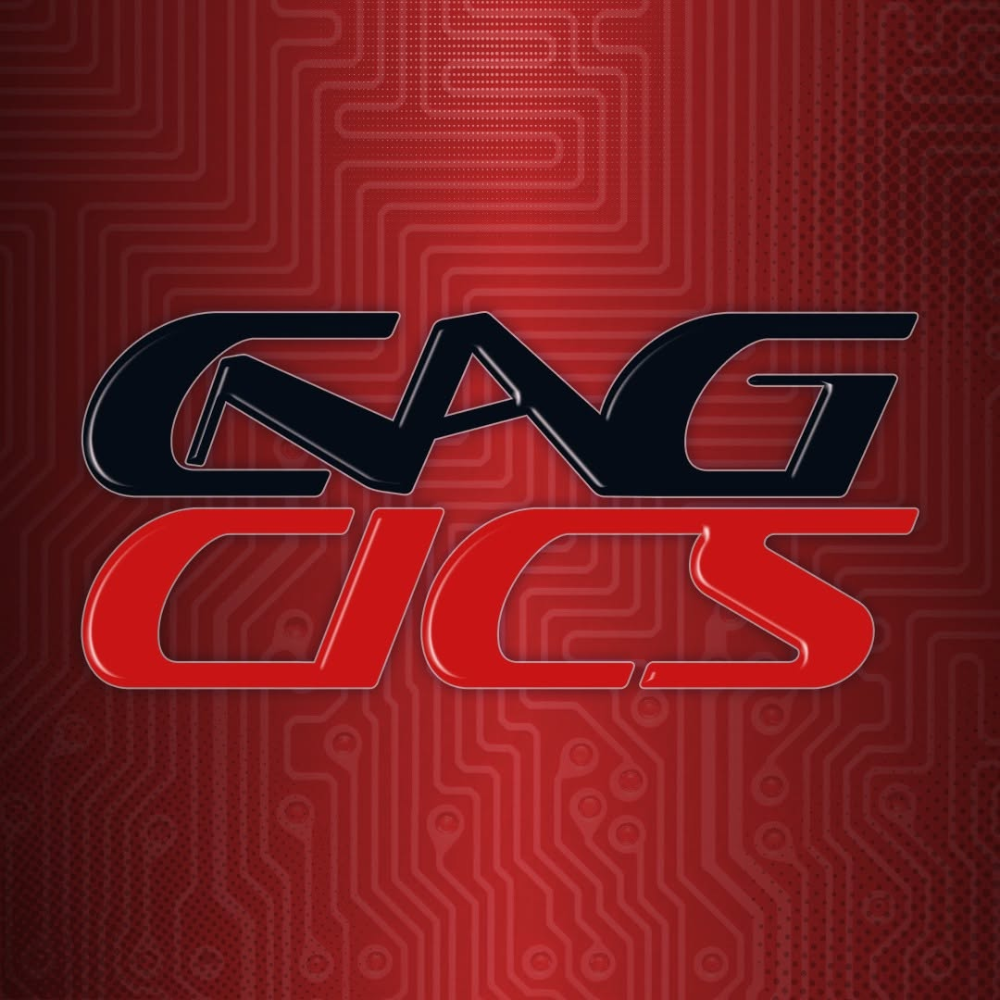
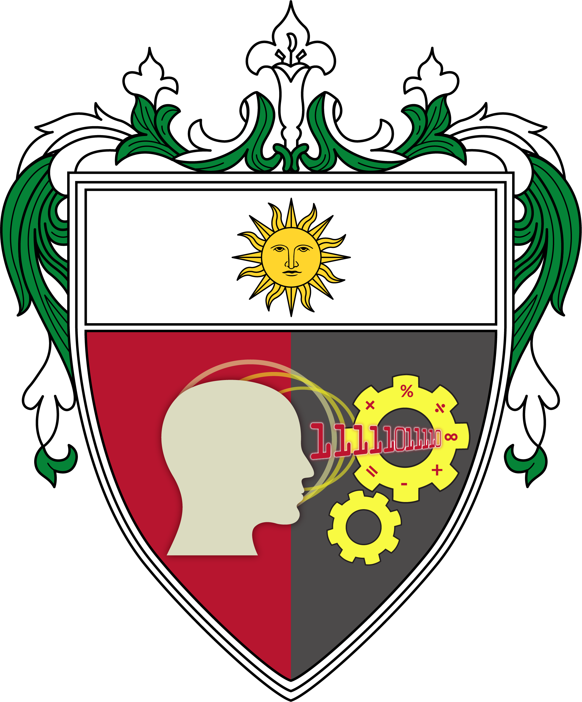
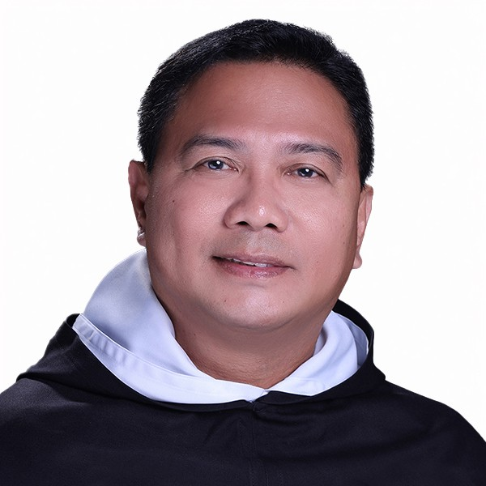
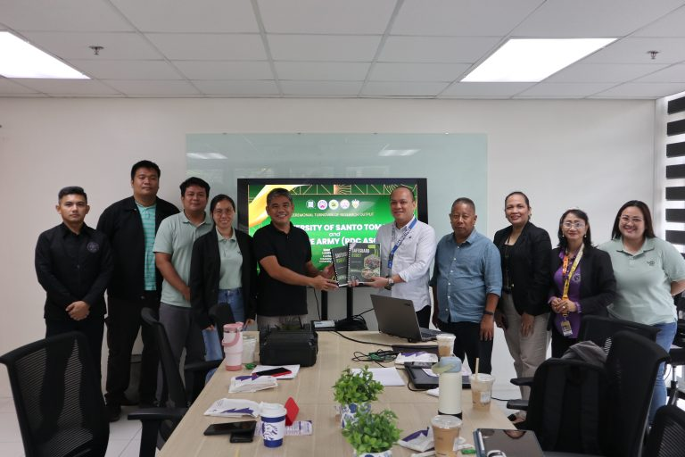
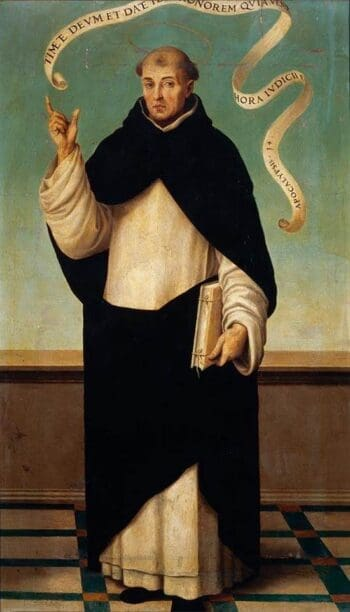

CNAG-IICS
A student organization of the college. [Description to be added.]

College of Information and Computing Sciences
University of Santo Tomas
The CICS community is made up of students, student organizations, faculty, and administrators who work together in the pursuit of truth and the spirit of service.

A student organization of the college. [Description to be added.]
The student organization for Computer Science students.
The student organization for Information Systems students.
The college chapter of the Catholic student organization Pax Romana.
The student organization for Information Technology students.
Dean

Regent
Assistant Dean

College Secretary
May 2026
Department of Information Technology academic staff Asst. Prof. Edwin S. De Guzman was elected to a CSTA international role.
Read More
March 2026
The research aims to aid the PH Army and BFP in search-and-rescue operations.
Read MoreDecember 2025
UST and the Philippine Army signed an MOA to develop the SAFEGUARD surveillance and ground-based autonomous robot.
Read More
Feast Day: May 5
Born in Valencia, Spain, in 1350, Vincent joined the Order of Preachers at 17. He later traveled across Spain, France, and Italy for about twenty years, preaching penance. He was known for his "gift of tongues" and "gift of prophecy," helped bring the Great Schism to an end, and was canonized by Pope Calixtus III in 1455.
Connection to CICS: He is the patron of the UST College of Information and Computing Sciences. Under his inspiration, the college commits to the pursuit of truth and the formation of technically competent professionals with a strong commitment to lifelong learning, social responsibility, and service.